Add dimensions and annotations to the drawing
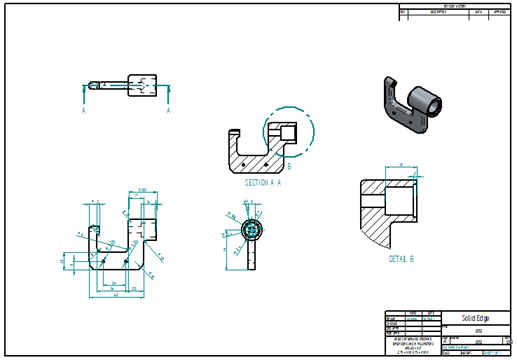
In the next few steps, add dimensions and annotations to the drawing.
Use the Retrieve Dimensions command to retrieve model dimensions into the drawing.
Also use some of the other dimensioning and annotation commands to manually add dimensions and annotations.
-
Use the Fit
 and Zoom Area commands to adjust the view area to display the drawing views shown below.
and Zoom Area commands to adjust the view area to display the drawing views shown below.
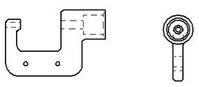
The fastest way to add dimensions to a drawing is to retrieve the dimensions from the model. Use the Retrieve Dimensions command to do this.
Choose Home tab→Dimension group→Retrieve Dimensions
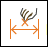
.Click the drawing view shown below.
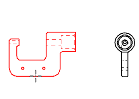
Click the drawing view shown below.
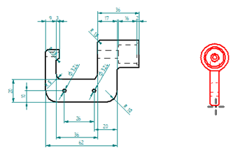
The retrieved dimensions are added to the drawing according to the current settings on the Retrieve Dimensions command bar.
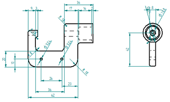
In the next few steps, use the Distance Between command to add more dimensions to the part.
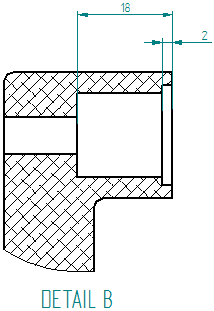
Use the Fit  and Zoom Area commands to zoom in on the detail view.
and Zoom Area commands to zoom in on the detail view.
Choose Home tab→Dimension group→Distance Between .
Use this command to dimension between multiple edges or sketch elements. Place chain or stacked dimensions with this command.
Position the cursor over the edge shown below and click to select it.
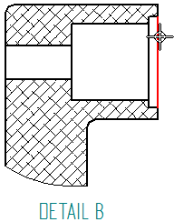
Position the cursor over the edge shown below and click to select it.
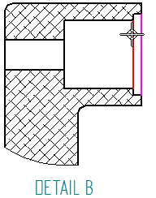
Position the cursor above the detail view, and then click to position the dimension as shown below.
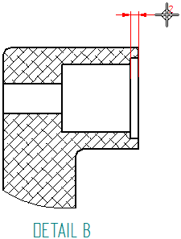
Position the cursor over the edge shown below, then click to select it.
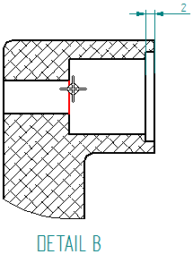
Move the cursor up and down, and notice how the cursor position affects the format of the dimension.
Position the cursor such that a stacked dimension displays as shown below, then click to place the dimension.
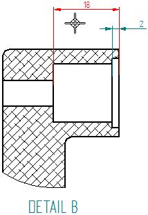
A robust set of dimensioning commands is available for adding dimensions to drawings.
Use the Zoom Area command to zoom in around the side drawing view.
Choose Home tab→Dimension group→Smart Dimension  .
.
Click the radius edge shown below.
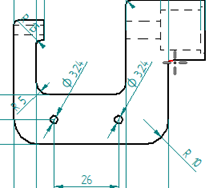
Click again to place the dimension, as shown below.
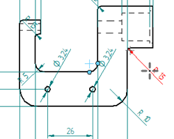
The Smart Dimension command should still be active.
Place the additional dimension shown below.
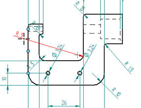
Add center line annotations to circular features, such as holes and cutouts, using the Center Mark command.
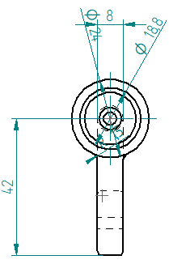
Use the Fit  and Zoom Area commands to display the drawing view displayed above.
and Zoom Area commands to display the drawing view displayed above.
Choose Home tab→Annotation group→Center Mark .
On the Center Mark command bar, ensure that the Projection Lines option is set.
Position the cursor to locate the outer-most circular edge, as shown below, and then click to place the center mark.
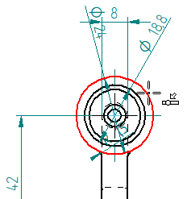
On the status bar, choose Fit  to fit the drawing sheet to the application window.
to fit the drawing sheet to the application window.
On the Quick Access toolbar, choose Save  .
.
You are finished adding dimensions and annotations to the drawing views.